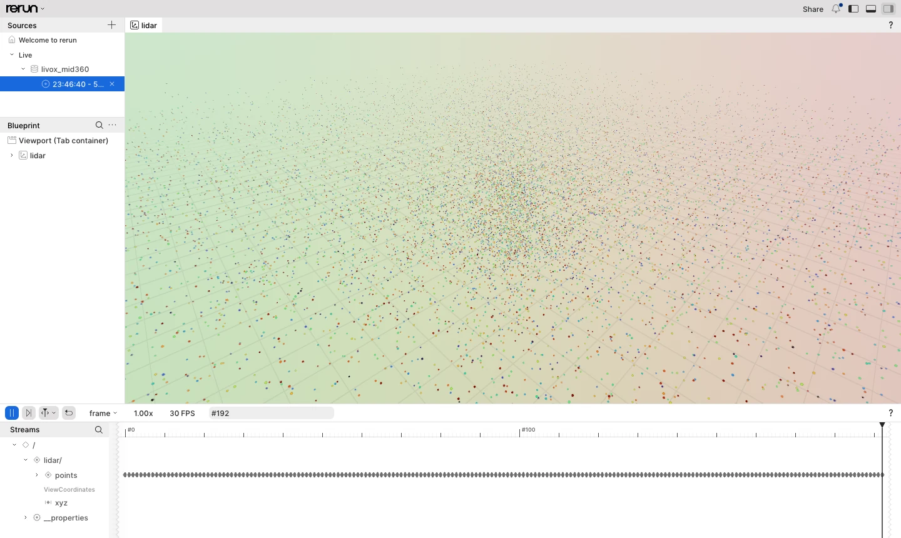

Rerun viewer¶
Issue #147 adds livox-mid360-rerun
(tools/rerun/). It shows the point cloud of a live Mid-360 (or the simulator), or of an .lvx2
recording, in the Rerun viewer. The viewer runs natively or in a browser.
The tool is the only part of this repository with a third-party dependency, the Rerun C++ SDK, which in turn builds Apache Arrow. That is why it is opt-in and the library does not link it.

play --loop of a synthetic 10 s recording of a room with shelves, pillars and a walking
person, in the web viewer. The recording has about 20 000 points per 100 ms frame, coloured by
reflectivity. The layout is the embedded default, described in
Viewer layout.
Build¶
cmake -S . -B build -G Ninja -DCMAKE_BUILD_TYPE=Release -DLIVOX_MID360_BUILD_RERUN=ON
cmake --build build --target livox-mid360-rerun
Where the SDK comes from:
- An installed
rerun_sdkpackage of exactly version 0.38.1 is used when CMake finds one. - Otherwise the SDK release zip is fetched and checked against its SHA-256. Its build also downloads and builds Arrow, which takes a few minutes the first time.
- Arrow is configured as a separate CMake project, which does not inherit
CMAKE_CXX_COMPILER. It uses theCC/CXXenvironment variables, orcc/c++onPATH. Set them when only versioned compilers such asg++-14are installed. - The SDK ships prebuilt
rerun_clibraries for Linux (x86-64 and arm64) and macOS.
The viewer is a separate program, and its version should match the SDK:
- Native viewer:
cargo binstall rerun-cli@0.38.1, or thererun-clibinary from the release page. - Viewer and web viewer:
pip install rerun-sdk==0.38.1, which provides thereruncommand.
Usage¶
livox-mid360-rerun live [--lidar-ip A.B.C.D] [--host-ip A.B.C.D] [--sn SN] [--duration SECONDS]
livox-mid360-rerun play FILE.lvx2 [--rate X] [--loop] [--lidar-id N]
Options common to both sub-commands:
| Option | Meaning | Default |
|---|---|---|
--connect URL |
Send to a running viewer | rerun+http://127.0.0.1:9876/proxy |
--spawn |
Start a native viewer first (rerun must be on PATH), then send to it |
off |
--save FILE.rrd |
Write a Rerun recording. Alone, nothing is sent; with --connect / --spawn, both happen |
none |
--blueprint FILE.rbl |
Use this viewer layout instead of the embedded default | embedded |
--no-blueprint |
Send no layout; the viewer uses its heuristics | off |
--radius M |
Point radius in metres | 0.02 |
--frame-mode counter\|window, --window-ms N |
FramePolicy, as in livox-mid360-cli replay |
counter, 100 ms |
--extrinsic |
Transform the points on the host. live uses the LiDAR's install attitude (0x0012); play uses the file's extrinsic. No-return points are still skipped |
off |
live:
- Discovers and opens the LiDAR the same way
livox-mid360-cli recorddoes, then starts sampling. - Frames go from the receive thread through a
BoundedQueueof four to the logging thread. If the sink falls behind, the oldest frame is dropped (queue_droppedin the progress line). - Runs until
--durationexpires or SIGINT.
play:
- Paces the file by its recorded time.
--rate 0plays as fast as possible. --looprepeats the file until SIGINT.- A file with several LiDARs plays all of them, each to its own entity,
lidar/<lidar_id>/points. With--extrinsiceach one is moved by its own extrinsic.--lidar-idplays one of them tolidar/points(#169). LiDARs without time synchronisation have their own clocks, so their frames do not line up onsensor_time; use theframetimeline. InOutdoor_sampledata.lvx2, two of the extrinsics' translations look like centimetres, so with--extrinsicthose two LiDARs appear about 80 m up (lvx2.md, #108). --extrinsicexits with 2 when a played device has no enabled extrinsic. It also exits with 2 when an angle is not finite or outside ±180°, or when a translation is not finite or does not fit inint32millimetres (#174).
Both print logged frames=N points=P at the end. Exit codes:
| Code | Meaning |
|---|---|
| 0 | ok |
| 1 | usage |
| 2 | setup or I/O failure |
| 3 | no frame logged |
In a browser, against the simulator:
rerun --serve-web --port 9876 --web-viewer-port 9090 & # then open http://127.0.0.1:9090
python3 tools/livox_mid360_sim.py --bind 127.0.0.1 &
build/tools/rerun/livox-mid360-rerun live --lidar-ip 127.0.0.1 --host-ip 127.0.0.1
build/tools/rerun/livox-mid360-rerun play capture.lvx2 --loop

live against the simulator: its default scene is seeded random points. The time panel
follows the newest frame on the frame timeline. The screenshots were taken with the Selection
panel collapsed.
What is logged¶
| Entity / timeline | Content |
|---|---|
lidar (static) |
ViewCoordinates::RIGHT_HAND_Z_UP, the LiDAR frame |
lidar/points |
One Points3D per frame, coloured by reflectivity with the turbo colour map (0 blue, 255 red). Points at the origin (no return) are skipped, before --extrinsic moves the others (#171) |
lidar/<lidar_id>/points |
play of a file with several LiDARs: as lidar/points, one entity per LiDAR |
timeline frame |
A counter kept by the tool for each entity: +1 per logged frame, so frame N of every LiDAR is on step N |
timeline sensor_time |
Frame::base_time_ns. live: a timestamp (host time, TimestampPolicy::kHostOffsetOnce). play: a duration, because the recorded LiDAR time has no known epoch |
The frame timeline counts logged frames rather than using Frame::index. Frame::index is
assigned when a frame is assembled, so it would leave gaps where live drops a frame from the
queue.
Viewer layout (blueprint)¶
The tool sends a layout: one 3D view of lidar with a fixed orbital eye (position
(-9, -9, 7) m, looking at the origin, Z up), and a time panel that follows the newest frame on
frame. Without it:
- The 3D view's default eye tracks the smoothed bounding box of the scene. The box changes with every live frame, so the camera drifts. In a test with a static marker it moved by about 100 px, against less than 1 px with the layout.
- A layout without the follow state makes the viewer replay the history at its own frame rate and loop.
The Rerun C++ SDK can log blueprint archetypes, but it cannot send the activation command that makes the viewer use them. A blueprint built in C++ is therefore ignored (verified with 0.38.1).
A .rbl file saved by the Python SDK does carry that command, and the viewer applies it when
it arrives through RecordingStream::log_file_from_contents. So the default layout is
tools/rerun/default_blueprint.rbl:
- It is generated by
tools/rerun/make_blueprint.pyand compiled into the binary. - Regenerating it needs
pip install rerun-sdk==0.38.1; building the tool does not. - Regenerate it after changing the script or bumping the SDK version.
--blueprint FILE.rbl sends another layout. A convenient source is the viewer's own
"Save blueprint" menu entry. The file's application id must be livox_mid360, which is the id
the tool logs under.
Memory on long sessions¶
Rerun keeps the history of every frame, so a live session grows by roughly one frame per 100 ms (about 20 000 points each). Both the viewer and the web server drop the oldest data beyond a limit:
| Where | Limit | Default |
|---|---|---|
| Native viewer | rerun --memory-limit 2GB |
75 % of RAM |
| Web viewer's gRPC server | rerun --serve-web --server-memory-limit 1GiB |
1 GiB |
| Web viewer | Limited by the browser tab |
The tool does not buffer. The in-process rerun_c batcher sends everything it is given.
Tests¶
The ctest rerun_live_play runs only with LIVOX_MID360_BUILD_RERUN=ON. It checks the exit
codes, that frames were logged and that each .rrd file is not empty:
- It plays
tests/data/mini.lvx2into an.rrdfile. - It plays a copy of that file with one point zeroed into a no-return, with and without
--extrinsic, and checks that both log the same number of points (#171). - It plays a copy with a NaN roll with
--extrinsic, and checks thatplayrefuses it with exit code 2 (#174). - It runs
liveagainst the simulator for 2 s into a second.rrdfile.
The CI job rerun builds the tool and runs that test.